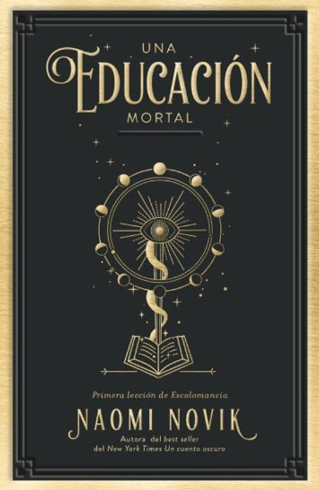

<!DOCTYPE html>
<html>
<head>
</html>	
	<title>
		libro 2
	</title>
</head>
<body>



<h3>Una educación mortal</h3>
<!--
	https://www.bookshop.com.uy/una-educacion-mortal-html.html-->

<h4>Inaugurando una nueva trilogía, la autora superventas de "Un cuento oscuro" y "Un mundo helado" nos abre las puertas a una peligrosa escuela de magia donde cometer errores es sinónimo de una muerte segura. hasta que una chica empieza a reescribir las reglas del juego.
<br>
<br>
Entra en una escuela de magia diferente a cualquiera que hayas conocido antes. En ella no hay profesores ni vacaciones, las amistades son pura estrategia y las probabilidades de sobrevivir nunca son las mismas. Cuando estás dentro, solo hay dos maneras de salir: o te gradúas o mueres. El Higgins está preparada como nadie para hacer frente a los muchos peligros de la escuela.
<br>
<br>
Puede que no tenga aliados, pero posee una fuerza oscura lo suficientemente poderosa para elevar montañas y aniquilar a millones, por no mencionar que puede destruir fácilmente a los innumerables monstruos que merodean por ella. Solo que, accidentalmente, podría matar también al resto de estudiantes. Así que El está intentando con todas sus fuerzas no usarla. a menos que no tenga elección. Ingeniosa, mordaz y divertida, y también con un profundo sentido de la justicia, esta fascinante novela nos recuerda que hay cosas mucho más importantes que la mera supervivencia.</h4>

</body>
</html>